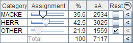
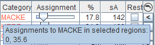
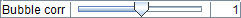
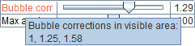
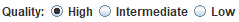
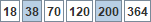

The purpose of the interpretation window is to assign the total sA for each region to the selected acoustic category and to store the interpretation to the database. Each region has one set of assignments per frequency for the total extent of the region.
In the top left corner, some numerical information is displayed, both for the visual range and for the active region.
Note that sA depends on the chosen horizontal grid unit.
The selected acoustic categories for the survey appear at the bottom of the interpretation window. A subset of these acoustic categories can be assigned to each region. Select a region and assign an acoustic category to that region by clicking the acoustic category button and editing the category assignment.
Clicking an acoustic category button that is already selected will remove that category from the selected region.
Clicking an acoustic category button that is not selected will add that category to the selected region and:

After selecting which acoustic category to interpret for a region, use the sliders in the right-hand part of the window to assign a percentage of the total sA to the corresponding acoustic category. The fraction of the total sA for each acoustic category will also be reported here.
It is possible to make one or more of the acoustic categories a 'rest acoustic category'. The unassigned sA will be distributed equally among the rest acoustic categories.
If categorization has been performed in the preprocessing, and a mapping from acoustic categories to preprocessed categories is configured, then it will be possible to use the buttons in the KORONA column . Pressing such a button will compute sA for the samples categorized as a category that the acoustic category maps to, and adjust the assignment accordingly. This can be used to get a quick initial guess for the interpretation. Pressing the Spacebar when the mouse is in this column will cycle through the following options:
Multiple regions can be interpreted simultaneously by selecting more than one region. Adjusting the assignment then applies to all selected regions.
If the selected regions have different assignments for the same acoustic category, then the average assignment is displayed, and the name label is colored red. The name label then has a tooltip showing the different assignment values.

The name label is also colored red if an acoustic category is used as 'rest acoustic category' in some, but not all, of the selected regions.

Bubble correction is a factor that is multiplied to the sA in order to compensate for reduced echo due to air bubbles. Initially, all pings have a bubble correction of 1 meaning that the sA values are unchanged. The bubble correction can be modified using the slider or the nearby input field.
If several different bubble corrections have been specified for the visible range, then the bubble correction label is colored red. The label then has a tooltip with all the different bubble correction values. The average of the minimum and maximum of these values is used when computing the corrected sA.

The bubble correction used in a grid column is the average of the minimum and maximum bubble corrections for all pings in the range of the grid column. This means that corrected sA values shown on the screen are not exactly equal to the corrected sA values stored to the database.

The quality indicates how easy it is to scrutinize.
The buttons for selecting the quality are shown if the configuration parameter Show quality options is selected. Otherwise, a dialog will appear after clicking the 'Store' button where the quality is selected.
The quality buttons are synchronized with the Quality parameter.

These buttons select which frequencies will be stored to the database.
The frequency buttons are synchronized with the Frequencies parameter.
These buttons can be used for navigating in the echogram. They are the same as those in the toolbar.
The store button is for storing to the database. Placing the mouse over the store button will show the grid to be stored as an echogram overlay.
The store button has three different modes:
Storing the interpretation to the database uses all pings when calculating sA, independently of the currently selected data loading mode. The grids are stored to the database updating the tables Observation, Scatter and ScatterData.
Before storing to the database, the following actions are taken:
The delete button is used for deleting from the database. Placing the mouse over the delete button will show the grid to be deleted as an echogram overlay.
The delete button has three different modes:
The database storing settings for an area that is not stored to the database can be edited by choosing
'Edit storing settings...' from the menu displayed by clicking the
 button.
A dialog will appear where the
horizontally varying settings
can be changed.
button.
A dialog will appear where the
horizontally varying settings
can be changed.
The interpretation of a region consists of assignments to a set of species for each frequency. For example, 3 species and 6 frequencies result in 3 × 6 = 18 assignment values. As a help for setting all these values, the assignments are copied to uninitialized frequencies.
The interpretation of a region is initialized for the current frequency when a species is added to the assignment table by selecting one of the species buttons. When changing the current frequency to a frequency where the interpretation is not initialized, the interpretation is initialized for that frequency by copying all assignments. The source for this copy is selected from the following prioritized list:
When storing to the database, and the interpretation is not initialized for all frequencies to be stored, a dialog will appear with the following options:
Note that it is possible to reinitialize the interpretation through the 'Delete assignments on other frequencies' item in the regions menu.